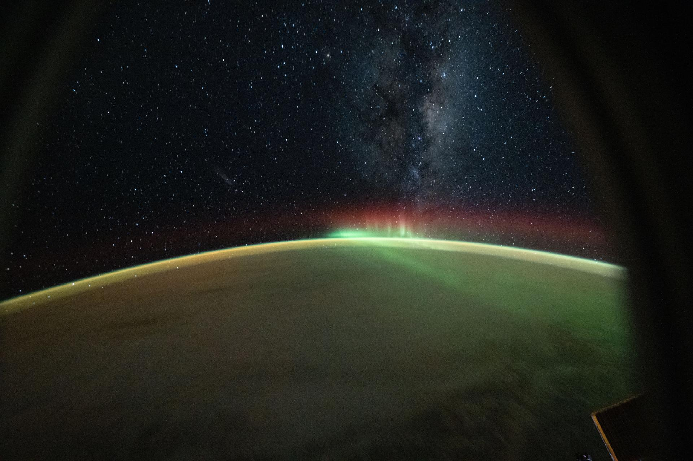
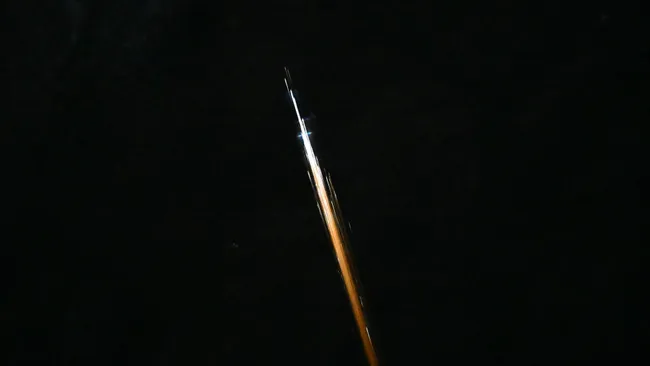

|
 |
Últimas Noticias
NASA
La NASA presenta nuevas herramientas espaciales
Descubre cómo la agencia está innovando en exploración del espacio.
Hace 4 días
NASA.gov
Misión Artemis II en preparación
La NASA anuncia avances en su próxima misión lunar.
Hace 1 mes
Space.com
Nuevas imágenes del universo profundo
Fotografías sorprendentes captadas por telescopios espaciales.
Hace 2 semanas